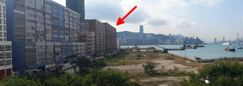

We will get together to watch and discuss the excellent lectures on quantum electrodynamics (QED) that Richard Feynman originally gave at the University of Auckland in 1979. QED is a strange, beautiful and fundamental theory from which many intuitive or extremely counter-intuitive predictions (e.g. quantum paradoxes) about light and matter can be made. Many have been verified experimentally with much precision. The lectures present the theory in a witty and accessible manner.
Event open to all. Bring drinks and snacks.
« The theory of quantum electrodynamics describes Nature as absurd from the point of view of common sense. And it agrees fully with experiment. So I hope you accept Nature as She is — absurd. » — Richard Feynman
The lab's address is:
M-Labs Limited
Workshop 15B 6/F Block B1
Yau Tong Industrial City
17 Ko Fai Rd
Yau Tong, Hong Kong
It is a short walk from the Yau Tong MTR station. Take exit A2. Viewed from the MTR exit, Yau Tong Industrial City is inside that building:

When entering from Ko Fai Road, get inside the courtyard, the entrance to Block B1 is in front of you on your left. Take the elevator or the stairs to the 6th floor.
Note that there are no public events at our address in Des Voeux Road Central.
|
M-Labs Limited |
Freenode #m-labs Developer mailing list GitHub: m-labs Twitter: @M_Labs_Ltd |